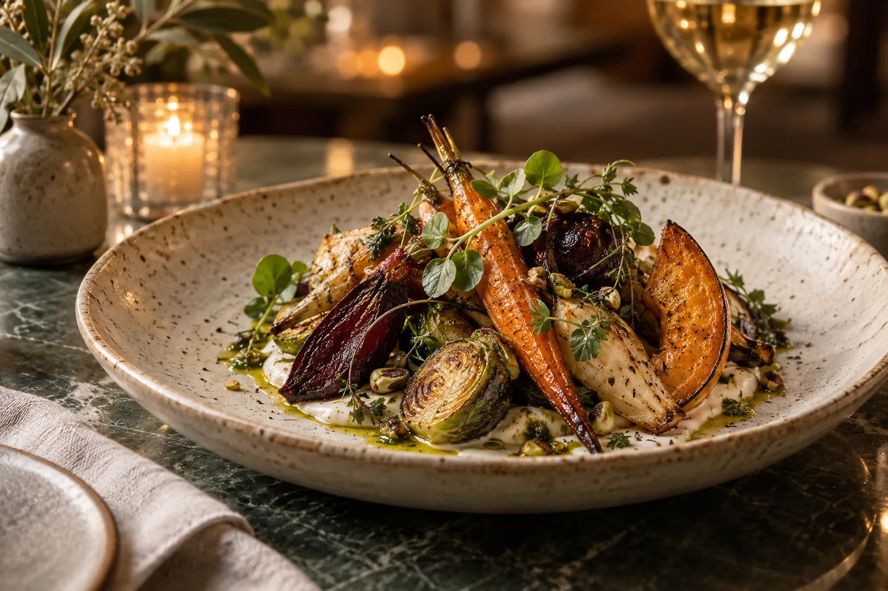

Le jardin dans l’assiette
Légumes rôtis, herbes fraîches et textures délicates. Une inspiration végétale au fil des saisons.
Préparer une réservation ↗CUISINE · SAISONS · PARTAGE
Une cuisine inspirée par les produits, une table accueillante et le plaisir de prendre son temps.
Préparer une réservation ↗
L’attention au détail
Légumes rôtis, herbes fraîches et textures délicates. Une inspiration végétale au fil des saisons.
Préparer une réservation ↗Un déjeuner à deux ou une grande tablée : imaginer un moment convivial autour de produits simples.
Préparer une réservation ↗Un anniversaire, un repas d’équipe ou une occasion particulière, dans une atmosphère chaleureuse.
Préparer une réservation ↗Passons à votre projet
E‑Vitrine peut adapter cette direction à votre activité.